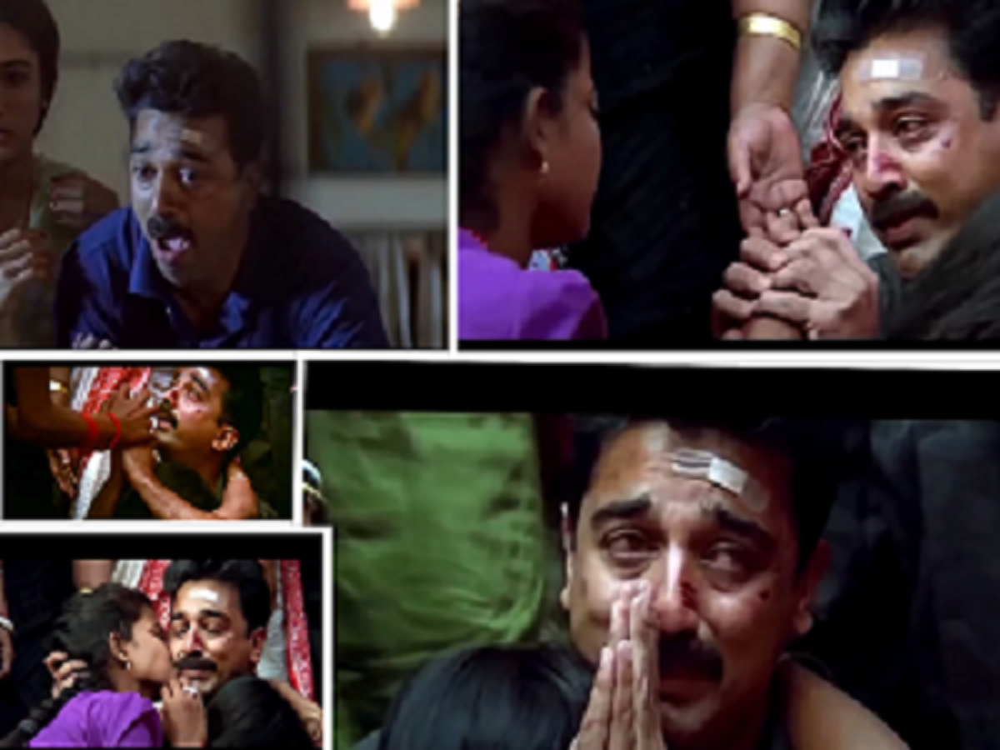

Mahanadhi's reference in Vada Chennai?
Mahanadhi Movie Analysis

Mahanathi (1994)
.
.
.
Directed by: Santha barathyStory and screenplay by :Kamal Hassan
.
.
.
Mahanthi will haunt cinema till it's end because of the content which it carries even after 100 years it will be one among Tamil cinemas best film and fresh
In the run of appreciating foriegn films we people often our Tamil films have much more high standard films too .. one among them is Mahanthi ....The film starts a breezy way where Kamal is been himself A honest man ,who does not fight whether God is there or not .....As a story begins we could literally connect ourselves how we people fall easily in the trap of greedyness ...and when we realise it...it becomes late .....and the prison scenes in the film may remind you the film "Shawshank redemption " but as conincedene both of them were released in the same year ...and as the film moves you could see how hardship can God give to a person ...where he loses his wife ,mother in law .....and his son and daughter goes missing while he is in jail....we could shutter tears for the man ...tht well Kamal sir has written the screenplay and when he finds the daughter has been made into a sex worker ....the emotion he conveys is unmatchable and when he rescues her he hugs her and never feels to leave her ...and the other sex workers says tht she is Lucky because they were all left here by their own fathers and brothers....this shows that just because of their job they need not be worst .....and when Kamal listens to blaberring of his daughter during the dreams every father would have shed tears ....because as a father he worries that it is gonna remain as a scar which is hard to erase it ....and when the film ends the satisfaction is something different ...u start to empathise with the character thts the beauty of film ....❤️❤️

.
.
.
Characters : The first major character is the Punjabi who later becomes father in law ....is one great role who always guides him in the jail...and the dhanush character is very well potrayed how people play mind games ....the slightest character like the person who has Kamal son conveys a lot of emotion ...when he says "take him once he is sleep cause while he is awake it would create a lot of crying scene " within a small space the character gave a lot of impact ...the other characters like sukanya who has a small part played well...The mother in law is also one of the characters which gives a lot of impact...the sex worker who helps Kamal to rescue to her daughter created a lot of impact on everyone's heart ...the honest constable who is unbiased from the beginning never changes is one good written character...and all the negative shades from duqulak ,jailer ,dhanush and the business man is well played their parts ....

Every details counts :
1.One of the main reasons for the title is every women characters in the film is based on rivers so as collectively it is kept as "Mahanathi"
2.for the set of central jail ,the crew went for actual central jail and measured the lock up
3.for the set of prositute area the crew went for Bombay red areas ...and noted down it and even there were many areas were the police warned them like not to go as a group so just the director and art director went to look for it
4.This movie is also said to be inspired from the film "Hard core "
5.The film screenplay is written in such a way that they have to find the house which is nearby railway track
.
.
.
Mahanadhi has often been cited as one of the saddest and most depressing films from Tamil cinema.On the centenary of Indian cinema in April 2013, Forbes India included Kamal Hassan's performance in the film on its list, "25 Greatest Acting Performances of Indian Cinema".
.
.
.
The film won two awards at the 41st National Film Awards. It received the National Film Award for Best Feature Film in Tamil and H. Sridhar and K. M. Surya Narayan received the National Film Award for Best Audiography.It also won Tamil Nadu State Film Award Special Prize for Best Film and Vikram Dharma received the Tamil Nadu State Film Award for Best Stunt Coordinator.
. . . . . . . . . . . . . . . . . . . . . . . . . . . . . . . . . .

Choosing your perfect Soulmate
by Barath / JULY 2020


Have ever missed someone in your life?
by 𝙍⭑ / JULY 2020